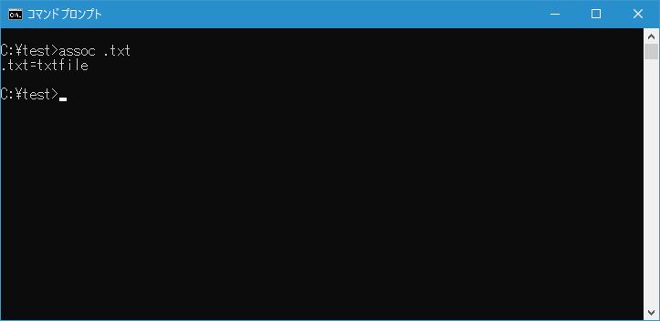
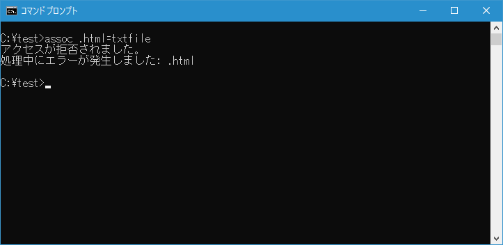
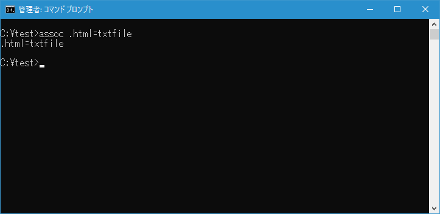
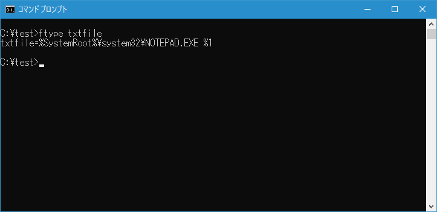
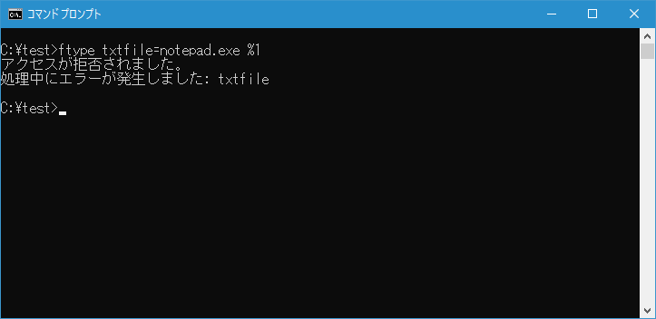
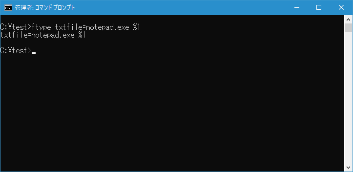

拡張子に対するファイルタイプと実行するアプリケーションの関連付け(ASSOC, FTYPE)
拡張子に対するファイルタイプの関連付けを行う ASSOC コマンドと、ファイルタイプ毎に実行するアプリケーションの関連付けを行う FTYPE コマンドの使い方について解説します。
ASSOCコマンドの使い方
ASSOC コマンドはファイルの拡張子に対するファイルタイプの関連付けを行います。書式は次の通りです。
ASSOC [.拡張子[=[ファイル タイプ]]]
何らかのファイルをダブルクリックなどして実行しようとしたとき、度のアプリケーションが起動するのかについて、拡張子毎にアプリケーションが定義されているのではありません。まず拡張子毎にファイルタイプが定義され、ファイルタイプ毎に実行されるアプリケーションが定義されます。
ASSOC コマンドを引数なしで実行すると現在登録されている拡張子とファイルタイプの関連付けのリストが表示されます。また引数に拡張子を指定すると、その拡張子に関連付けされているファイルタイプが表示されます。
例として拡張子「.txt」に関連付けされているファイルタイプを確認するには次のように実行します。
assoc .txt

拡張子「.txt」は現在ファイルタイプ「txtfile」に関連付けされていることが分かります。
次に引数無しで ASSOC コマンドを実行し、FIND コマンドを使って実行結果の中から「txtfile」と関連付けられている拡張子を探すには次のように実行します。(FINDコマンドについては「ファイル内の文字列を検索(FIND)」を参照されてください)。
assoc | find "txtfile"

拡張子「.dic」「.exc」「.log」「.scp」「.txt」「.wtx」については同じファイルタイプ「txtfile」に関連付けされていることが分かります。
-- --
拡張子に別のファイルタイプを割り当てることができます。例えば拡張子「.html」に対してファイルタイプ「txtfile」を関連付けするには次のように実行します。
assoc .html=txtfile
ASSOC コマンドを実行してみると「アクセスが拒否されました。処理中にエラーが発生しました: .html」と表示されて失敗しました。

拡張子とファイルタイプの関連付けを変更するには管理者権限でコマンドプロンプトを起動する必要があるようです(管理者権限でコマンドプロンプトを起動するには「管理者権限でコマンドプロンプトを起動する」を参照してください)。
それでは管理者権限で起動したコマンドプロンプトであらためて実行してください。

拡張子「.html」がファイルタイプ「txtfile」と関連付けされました。
FTYPEコマンドの使い方
FTYPE コマンドはファイルタイプ毎に実行するアプリケーションの関連付けを行います。書式は次の通りです。
FTYPE [ファイル タイプ[=[オープンコマンド文字列]]]
FTYPE コマンドを引数なしで実行すると現在登録されているファイルタイプと実行されるアプリケーションの関連付けのリストが表示されます。また引数にファイルタイプを指定すると、そのファイルタイプに関連付けされているアプリケーションが表示されます。
例としてファイルタイプ「txtfile」に関連付けされているアプリケーションを確認するには次のように実行します。
ftype txtfile

ファイルタイプ「txtfile」についてはアプリケーション「NOTEPAD.EXE」に関連付けされていることが分かります。
-- --
ファイルタイプに別のアプリケーションを割り当てることができます。例えばファイルタイプ「txtfile」に対してアプリケーション「notepad」を関連付けするには次のように実行します。
ftype txtfile=notepad.exe %1
ftype コマンドを実行してみると「アクセスが拒否されました。処理中にエラーが発生しました: txtfile」と表示されて失敗しました。

ファイルタイプとアプリケーションの関連付けを変更するには管理者権限でコマンドプロンプトを起動する必要があるようです。それでは管理者権限で起動したコマンドプロンプトであらためて実行してください。

ファイルタイプ「txtfile」がアプリケーション「notepad.exe」と関連付けされました。
-- --
ASSOC コマンドを使って拡張子に対するファイルタイプの関連付け方法とFTYPE コマンドを使ってファイルタイプをアプリケーションを関連付けする方法について解説しました。
( Written by Tatsuo Ikura )

著者 / TATSUO IKURA
初心者～中級者の方を対象としたプログラミング方法や開発環境の構築の解説を行うサイトの運営を行っています。